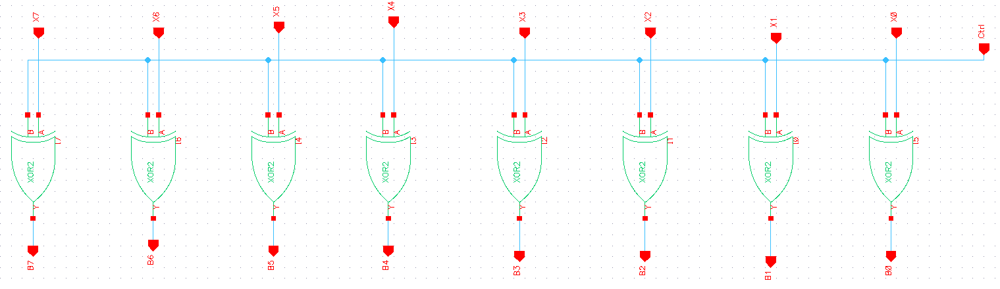
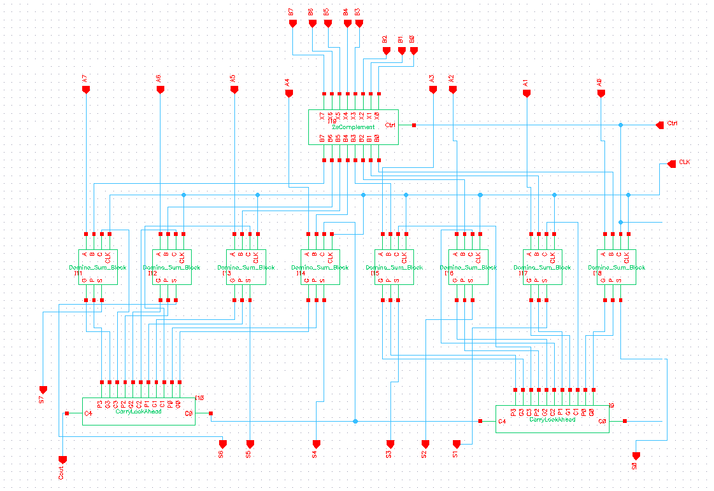

Abstract
We propose to develop an 8-bit CMOS adder with look ahead carry, with the design goals of maximizing performance through careful stage sizing while minimizing chip area and sources of leakage current. We will additionally add subtraction capabilities if possible through 1's complement subtraction, and propose to optimize performance through careful design of crucial bottlenecks and smart carry treatment.
Introduction
For our final project, we have chosen to create an 8-bit adder/subtractor. We have implemented this with carry look-ahead logic, which will keep the time delay for the adder down by computing the carry out bit of each stage in parallel. In order to properly design and test this adder, we have broken the project down modular components. The D Latch which will be the primary building block for our input and output registers. These registers will be used to make sure that we have the correct values at evaluation, and after the adder is complete. When the clock goes high (pre-charge), the input register goes transparent, and the output register goes opaque, and when the clock is low (evaluate) then the opposite is true. This insures that the final output does not see any pre-charge noise, and that the inputs will be ready and stable when evaluate begins.
Instead of using traditional full adders for our next module, we created a generation propagation module (SPG). The SPG creates generate and propagate bits from Ai and Bi. As with the rest of our logic, this module was created using domino logic, and therefore this function only occurs during the evaluate phase of the clock.
The generate and propagate bits are then sent to the carry look-ahead (CLU) module. The CLU in turn generates the carry bits for each SPG and for Cout. The CLU computes carry bits in parallel to decrease the number of gates from input to output in the higher bits. The logic for this look-ahead carry is simple for the carry in terms of the previous carry, generation, and propagation terms: $$ c_{i+1} = G_{i} + P_{i} $$ $$ s_{i} = G_{i} \oplus P_{i} $$
where $P_{i}$ and $G_{i}$ are computed by the full adder instead of a carry bit according to the following equations: $$ G_{i} = a_{i} \bullet b_{i} $$ $$ P_{i} = a_{i} \oplus b_{i} $$
where $a_{i}$ and $b_{i}$ represent input bits and $c_{i}$ is the carry input to the full adder. Using these equations, an equation for each carry can be generated in terms of only propagation, generation and the first carry input; this means each carry is no longer dependent on the previous carry and they can be computed quickly in parallel. The equations for a 4-bit CLU are seen below: $$\begin{eqnarray} c_{1} &=& G_{0} + P_{0}c_{0} \tag{5a}\\ c_{2} &=& G_{1} + P_{1}G_{0} + P_{1}P_{0}c_{0} \tag{5b}\\ c_{3} &=& G_{2} + P_{2}G_{1} + P_{2}P_{1}G_{0} + P_{2}P_{1}P_{0}c_{0} \tag{5c}\\ c_{4} &=& G_{3} + P_{3}G_{2} + P_{3}P_{2}G_{1} + P_{3}P_{2}P_{1}G_{0} + P_{3}P_{2}P_{1}P_{0}c_{0} \tag{5d} \end{eqnarray}$$
Here it is easy to see how larger bit implementations become excessively large. Our domino design, however, is quite small and will be covered below.
The final architecture represents a combination of carry-look ahead and ripple carry logic, to balance the speed gained from the look-ahead logic with the complexity, area, and delay inherent to 8-bit CLUs. We construct a 4-bit CLU, and use two rippled CLUs to compute 8-bit carry look-ahead logic with one ripple step. This is not necessarily as fast as a single 8-bit unit, but is more efficient in terms of area and power. In the following section we detail the development process, and in the subsequent section we discuss our results.
Procedure
To design the adder, we first constructed the basic functional modules of each module in our design and then the system as a whole. We then constructed a schematic, verified it, and created a symbol view. Once this is complete, we ran spectre simulations of each module to make sure that they operate the same as the functional simulations. Next, we create layouts for each module, verify them, extract them, and run post-extraction simulations. These simulations will show us the "real world" operation of our modules and system as a whole. simulate the 1's compliment module, and the full adder module separately to make sure that they function correctly. Once all of the symbols have been completed and the schematics have been verified and simulated, take the symbols, and construct a schematic for the full 8-bit 2's compliment adder. Once the full schematic is complete, verify it, and simulate it using Verilog XL. When simulating the full schematic, use the appropriate values in the stimulus file as given in the lab.
1's Compliment Module
Our 1's compliment implementation is very simple. Each input bit is XORed with the control bit. Therefore, when the control is 1, all the bits will flip, and when the control is 0 the will stay the same. In the lab, it is specified that we create a separate module for 2's compliment, and not for 1's compliment, but in our design, the 2's compliment functionality is built into the overall design, and cannot be separated out. In our design, in order to complete the 2's compliment logic, the control signal for the 1's compliment module is tied to the carry-in of the least significant adder in the design. This completes the 2's compliment algorithm, which is essentially, to flip all of the bits in the second number, and add 1. Because we cannot separate the 2's compliment logic, we test our 1's compliment logic separately to show that it will work as expected. In order to test this module, we must simulate it using Verilog XL, and give the input signals a few different operating conditions (different input patterns). Because we know what the module is supposed to output given a set input, we can determine that the module has been implemented correctly by covering all possible edge cases, as well as a base case. In figure 1, you can see the output wave form of our simulation. As you can see, the module behaves as expected, and therefore we can move on to the next module.
Full Adder Module
A traditional full adder takes in 3 bits (input A, input B, and carry-in) and outputs 2 bits (sum, and carry-out). Because we are implementing our adder using carry lookahead logic, however, we must change the output of our full adder appropriately. Our full adder takes in 3 bits (input A, input B, and carry-in), but it outputs 3 bits. These 3 bits are the sum, propagation bit, and generation bit. These two bits are determined by the following boolean algebra:
The propagation and generation bits will be used later as inputs to the carry lookahead unit module. This module must be tested in the same way as the 1's compliment module, however, because it is only a 1-bit module, the test cases are much more limited. We will be using 8 of these modules in total, but as long as we can verify the design of the single 1 bit adder, we know that all of them will work. In figure 2, you can see the output waveform of the Verilog XL simulation. As you can see, the module behaves as expected, and therefore we can move on to the carry lookahead unit.

Carry Look-Ahead Unit (CLU) Module
This module will compute 4 carry bits in parallel, which will significantly speed up our adder from the traditional ripple-carry implementation. These carry bits are generated in parallel by using the propagation and generation bits from each adder. Because of the algorithms for each carry bit, the hardware complexity is greater than that of a ripple-carry adder. This module is not simulated separately from the main adder since we have simulated the other 2 modules. Therefore, when we simulate the adder in its entirety, if there is a failure in the simulation, it must be in the carry lookahead unit. We implemented the carry lookahead unit using only NAND gates and inverters. This means that the hardware complexity of the unit will be larger than if we used AND/OR/inverter logic, but it will be easier to optimize on the transistor level, and can still possibly be smaller in size.

Top Level Integration
The final product created by connecting all of our modules is the 8-bit 2s compliment carry look-ahead adder. This adder is made up of a single 1s compliment module, 8 full adders, and 2 4-bit carry lookahead units, as seen in the schematic in figure 10; the symbol we created for this circuit can be seen in figure 8. In the schematic, the digits of B, the second argument, are fed to the one’s complement block, which also takes the control line as input. This line specifies whether addition or subtraction is to be done, a 0 meaning addition and a 1 meaning subtraction. Treating this input also as the carry-in, we achieve 2’s complement addition, as we can treat the B argument as the one’s complement plus one when subtraction is requested. The two CLU units, each four bits wide, are at the bottom, and the propagate and generate signals are fed to the blocks accordingly. The full adders receive the carries from this CLU unit, and the final carry of the first unit is used as the carry in to the second unit and second four bit group.
In order to verify that this adder works as expected, we implement 4 specific input cases given by the lab in order to verify that the module works, in addition to a simple initialization test case. These five test conditions are given as $$\begin{eqnarray} 00000000 + 00000000 &=& 0 \; 00000000 \tag{A}\\ 01111111 + 00000001 &=& 0 \; 10000000 \tag{B}\\ 10001111 + 00000000 &=& 1 \; 00001110 \tag{C}\\ 00000000 - 00000000 &=& 1 \; 01111111 \tag{D}\\ 01111111 - 10001111 &=& 0 \; 11110000 \tag{E}\\ \end{eqnarray}$$
We input the different cases into our stimulus file for this simulation, and run it using VERILOG XL. As shown in figure 4 the output of our adder was correct for every case. It successfully performed addition and subtraction, and even was able to return 2's complemented sums (negative numbers). $$\newcommand\T{\Rule{0pt}{1em}{.3em}} \begin{array}{|c|c|c|c|c|} \hline Carry & Y[7:0] \T & Hold Time [ns] \T & Setup Time [ns] \T & Prop. Delay [ns] \\\hline 0 \T & 00000000 \T & 10 \T & 8 \T & 18 \\\hline 0 \T & 10000000 \T & 5 \T & 17 \T & 22 \\\hline 1 \T & 00001110 \T & 7 \T & 7 \T & 14 \\\hline 1 \T & 01111111 \T & 8 \T & 17 \T & 25 \\\hline 0 \T & 11110000 \T & 8 \T & 5 \T & 13 \\\hline \end{array}$$
Conclusion
In this lab, we learned how to unit test our products using verilog simulations and cadence schematics. We created an end-to-end product, acceptance tested its functionality, and learned about the hardware development process. The combination of unit testing and acceptance testing is critical to understand in industry, and will help us have a faster and more accurate development cycle for the final project. As shown in our analysis, this lab was a success. Every module worked as expected, as did the final adder.